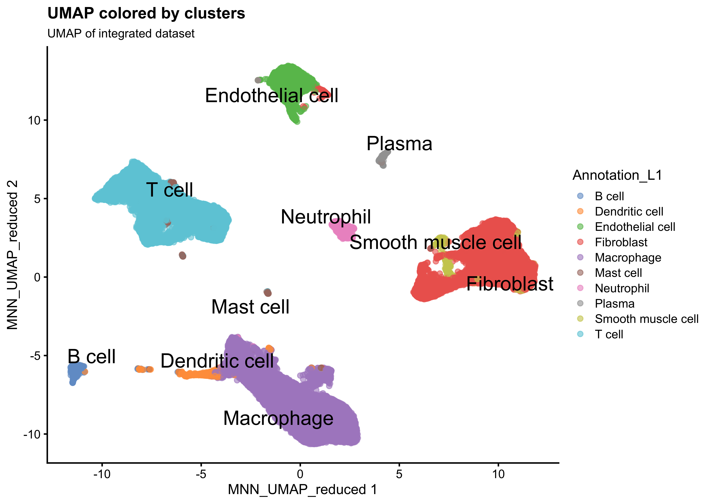
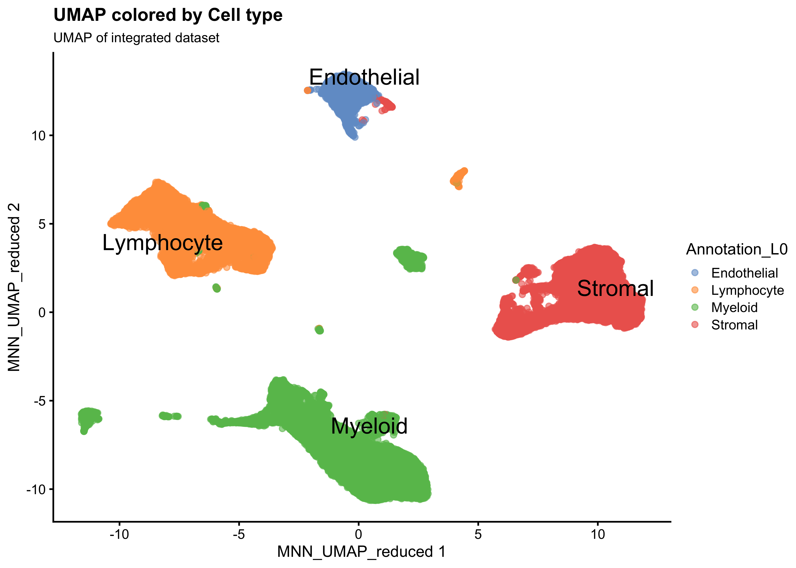
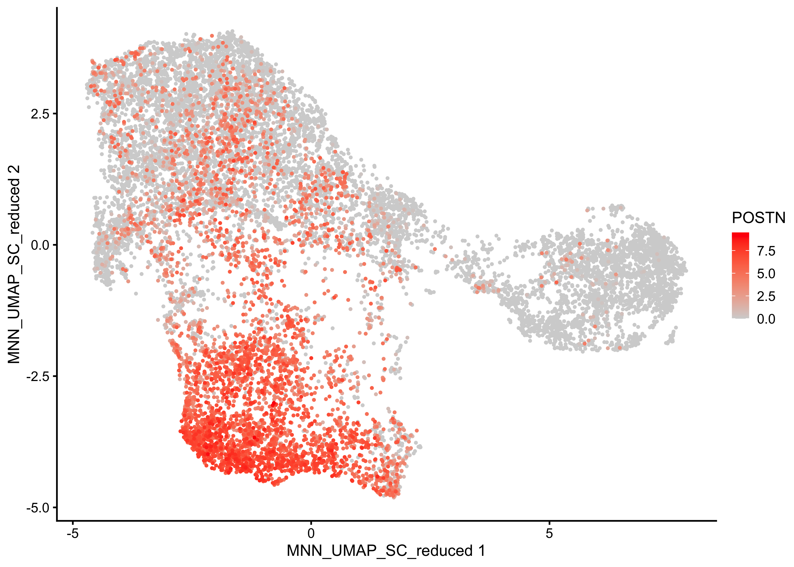
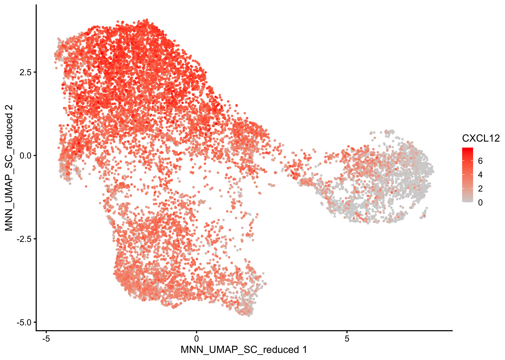
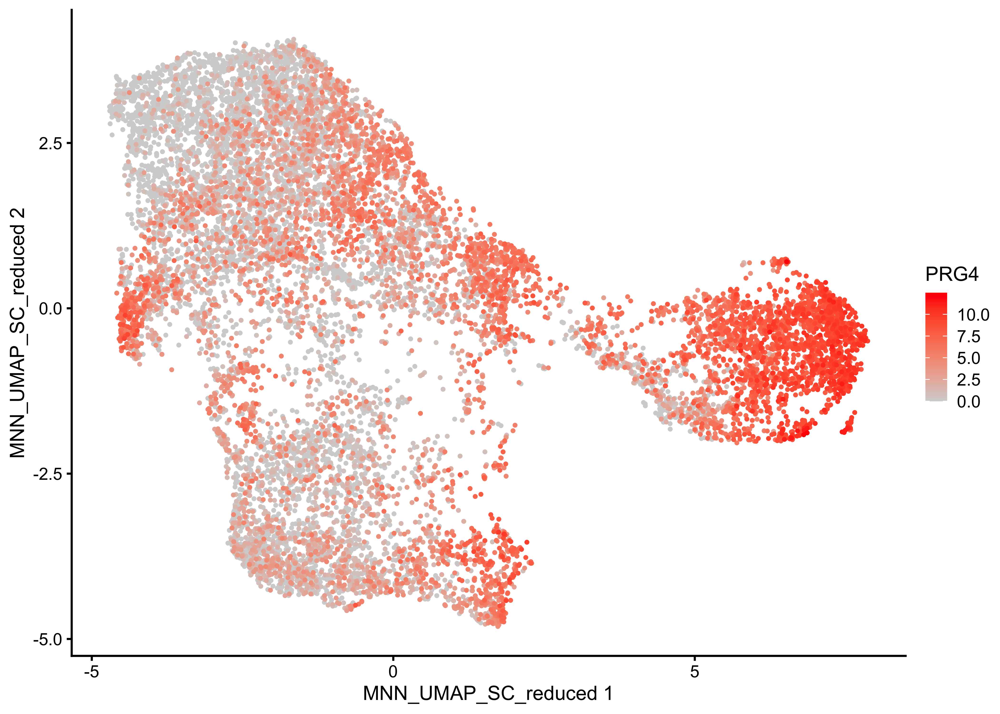
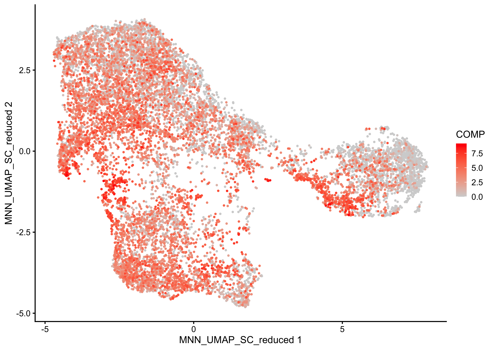
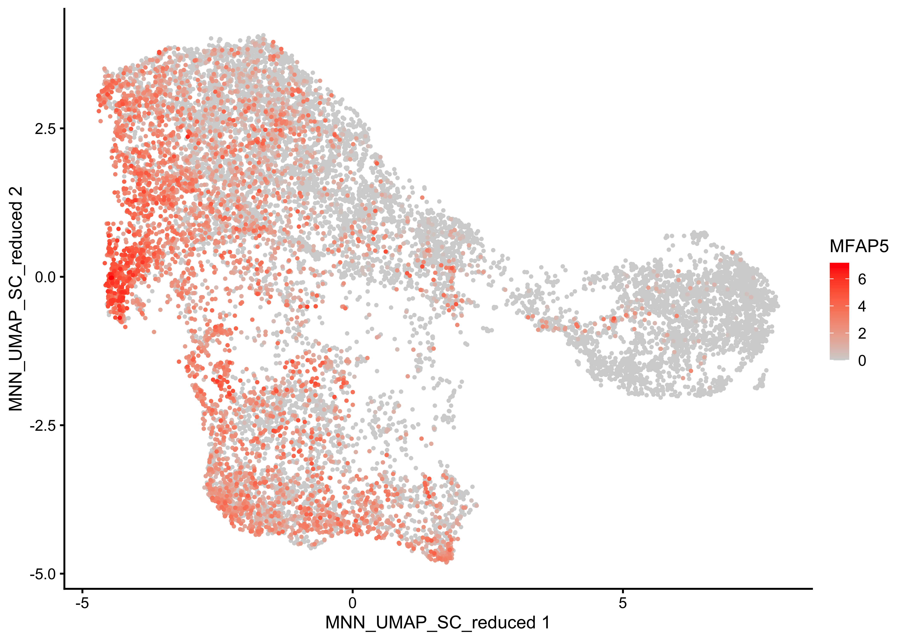
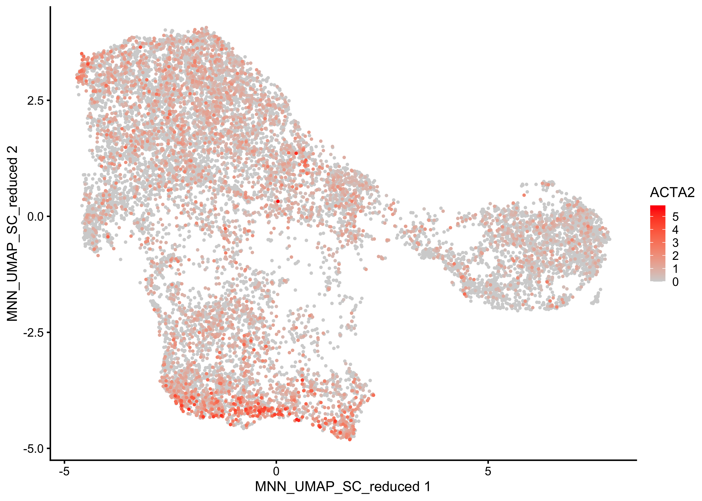
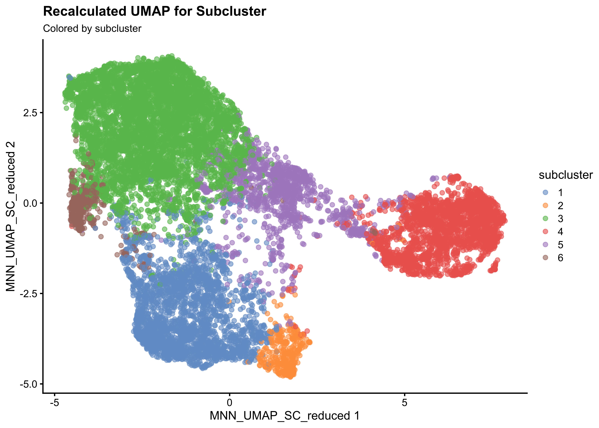

Subclustering
07_SubClustering
SarahL.
Jun 27 2024 20:13:04
Last updated: 2024-06-27
Checks: 6 1
Knit directory: RA_SingleCellAnalysis/
This reproducible R Markdown analysis was created with workflowr (version 1.7.1). The Checks tab describes the reproducibility checks that were applied when the results were created. The Past versions tab lists the development history.
The R Markdown file has unstaged changes. To know which version of
the R Markdown file created these results, you’ll want to first commit
it to the Git repo. If you’re still working on the analysis, you can
ignore this warning. When you’re finished, you can run
wflow_publish to commit the R Markdown file and build the
HTML.
Great job! The global environment was empty. Objects defined in the global environment can affect the analysis in your R Markdown file in unknown ways. For reproduciblity it’s best to always run the code in an empty environment.
The command set.seed(20240328) was run prior to running
the code in the R Markdown file. Setting a seed ensures that any results
that rely on randomness, e.g. subsampling or permutations, are
reproducible.
Great job! Recording the operating system, R version, and package versions is critical for reproducibility.
Nice! There were no cached chunks for this analysis, so you can be confident that you successfully produced the results during this run.
Great job! Using relative paths to the files within your workflowr project makes it easier to run your code on other machines.
Great! You are using Git for version control. Tracking code development and connecting the code version to the results is critical for reproducibility.
The results in this page were generated with repository version 5887ab5. See the Past versions tab to see a history of the changes made to the R Markdown and HTML files.
Note that you need to be careful to ensure that all relevant files for
the analysis have been committed to Git prior to generating the results
(you can use wflow_publish or
wflow_git_commit). workflowr only checks the R Markdown
file, but you know if there are other scripts or data files that it
depends on. Below is the status of the Git repository when the results
were generated:
Ignored files:
Ignored: .DS_Store
Ignored: .Rhistory
Ignored: .Rproj.user/
Ignored: analysis/.DS_Store
Ignored: data/.DS_Store
Ignored: data/cellbender_data_h5/
Ignored: data/spatial/
Ignored: output/00_DoubletDetection.rds
Ignored: output/00_sce_DataPreparation.rds
Ignored: output/01_sce_QualityControl.rds
Ignored: output/01_sce_QualityControl_cellfiltered.rds
Ignored: output/02_sce_DimensionalityReduction.rds
Ignored: output/03_sce_Integration_Batchelor.rds
Ignored: output/03_sce_Integration_Harmony.rds
Ignored: output/04_sce_CellCycle.rds
Ignored: output/05_sce_CelltypeAnnotation.rds
Ignored: output/05_sce_Clustering.rds
Ignored: output/06_sce_CelltypeAnnotation.rds
Ignored: output/07_sce_SC_Bcell.rds
Ignored: output/07_sce_SC_Dendritic.rds
Ignored: output/07_sce_SC_Dendritic_Anno.rds
Ignored: output/07_sce_SC_Endothelial.rds
Ignored: output/07_sce_SC_Endothelial_Anno.rds
Ignored: output/07_sce_SC_Fibroblast.rds
Ignored: output/07_sce_SC_Fibroblast_Anno.rds
Ignored: output/07_sce_SC_Macrophage.rds
Ignored: output/07_sce_SC_Macrophage_Anno.rds
Ignored: output/07_sce_SC_Mast.rds
Ignored: output/07_sce_SC_Merge.rds
Ignored: output/07_sce_SC_Neutrophil.rds
Ignored: output/07_sce_SC_Plasma.rds
Ignored: output/07_sce_SC_SmoothMuscle.rds
Ignored: output/07_sce_SC_Tcell.rds
Ignored: output/07_sce_SC_Tcell_Anno.rds
Ignored: output/08_DifferentialAbundance_miloR.rds
Ignored: output/10_sce_CellChat_Knee.rds
Ignored: output/10_sce_CellChat_MCP.rds
Ignored: output/10_sce_CellChat_Wrist.rds
Ignored: output/Annotation_L0_Wilcoxon.xlsx
Ignored: output/Annotation_L1_Wilcoxon.xlsx
Ignored: output/Annotation_output/
Ignored: output/Cluster_Marker_Genes.xlsx
Ignored: output/Knee_KvM.csv
Ignored: output/Knee_KvW.csv
Ignored: output/MAST_output/
Ignored: output/MCP_KvM.csv
Ignored: output/MCP_MvW.csv
Ignored: output/ManualAnno_L0_Wilcoxon.xlsx
Ignored: output/ManualAnno_L1_Wilcoxon.xlsx
Ignored: output/ScMergeAnnotation_output/
Ignored: output/Spatial_knee.rds
Ignored: output/Spatial_knee_SC.rds
Ignored: output/Subcluster_Annotation_output/
Ignored: output/Wrist_KvW.csv
Ignored: output/Wrist_MvW.csv
Ignored: renv/.DS_Store
Ignored: renv/library/
Ignored: renv/staging/
Untracked files:
Untracked: analysis/07_SubClustering_Merge.Rmd
Untracked: analysis/08_DifferentialExpression_EdgeR.Rmd
Untracked: analysis/08_DifferentialExpression_MAST.Rmd
Untracked: analysis/08_DifferentialExpression_Pseudobulk.Rmd
Untracked: analysis/08_DifferentialExpression_muscat.Rmd
Untracked: analysis/09_DifferentialAbundance_miloR.Rmd
Untracked: analysis/10_EnrichmentAnalysis.Rmd
Untracked: analysis/11_CellChat.Rmd
Untracked: analysis/99_Plotting.Rmd
Untracked: analysis/Spatial_hand.Rmd
Untracked: analysis/Spatial_knee.Rmd
Unstaged changes:
Modified: analysis/02_DimensionalityReduction.Rmd
Modified: analysis/03_Integration_Batchelor.Rmd
Modified: analysis/06_CelltypeAnnotation.Rmd
Modified: analysis/06_SC_Fibroblast.Rmd
Deleted: analysis/07_DifferentialExpression_EdgeR.Rmd
Deleted: analysis/07_DifferentialExpression_MAST.Rmd
Deleted: analysis/07_DifferentialExpression_Pseudobulk.Rmd
Deleted: analysis/07_DifferentialExpression_muscat.Rmd
Modified: analysis/07_SubClustering.Rmd
Modified: analysis/07_SubClustering_Annotation.Rmd
Deleted: analysis/08_DifferentialAbundance_miloR.Rmd
Deleted: analysis/09_EnrichmentAnalysis.Rmd
Deleted: analysis/10_Plotting.Rmd
Deleted: analysis/Ege_06_SC_Fibroblast.Rmd
Deleted: analysis/OLD06_SubClustering.Rmd
Modified: analysis/_site.yml
Modified: analysis/index.Rmd
Modified: code/standard_libraries.R
Modified: renv.lock
Note that any generated files, e.g. HTML, png, CSS, etc., are not included in this status report because it is ok for generated content to have uncommitted changes.
These are the previous versions of the repository in which changes were
made to the R Markdown (analysis/07_SubClustering.Rmd) and
HTML (docs/07_SubClustering.html) files. If you’ve
configured a remote Git repository (see ?wflow_git_remote),
click on the hyperlinks in the table below to view the files as they
were in that past version.
| File | Version | Author | Date | Message |
|---|---|---|---|---|
| Rmd | 5887ab5 | sarloet | 2024-06-20 | fix |
| Rmd | ba195bc | sarloet | 2024-06-13 | fix |
| Rmd | 299e5e4 | sarloet | 2024-06-06 | fix |
| Rmd | 8be1325 | sarloet | 2024-06-05 | renv |
Subclustering
Setup
Standard packages
library(here)
source(here("code", "standard_libraries.R"))Additional Packages
#Load Packages
suppressPackageStartupMessages({
library(batchelor)
library(bluster)
library(presto)
library(dittoSeq)
library(gridExtra)
library(intrinsicDimension)
})Set Parameter
set.seed(123)
bpp <- BiocParallel::MulticoreParam(parallel::detectCores()-1, RNGseed=123)
path <- here::here()Load Data
## RA DATASET
sce <- readRDS(file = paste0(path,'/output/06_sce_CelltypeAnnotation.rds')) # 06Explore Dataset
#Dimensions of count matrix
dim(sce)[1] 30488 64639https://mperalc.gitlab.io/scRNA-seq_workshop_2021/additional-resources.html## UMAPs coloured by cluster or cell type
Plot Annotation
Annotation L1
#cluster
plotReducedDim(sce, "MNN_UMAP_reduced", colour_by="Annotation_L1", text_by="Annotation_L1") +labs(title="UMAP colored by clusters",subtitle = "UMAP of integrated dataset")
Annotation L0
#cell type
plotReducedDim(sce, "MNN_UMAP_reduced", colour_by="Annotation_L0", text_by="Annotation_L0") +labs(title="UMAP colored by Cell type ",subtitle = "UMAP of integrated dataset")
Subclustering Function
# Create Subclustering function
SUBCLUSTER <- function(sce.sc, sc_celltype, clust_param="leiden", k_param=50, merge_order, batchcorr=FALSE){
set.seed(123)
#Subset sce object for ce scelltype
sce.subset <- sce.sc[,sce.sc$celltype == sc_celltype]
#Get top HVG for subcluster
dec <- modelGeneVar(sce.subset, block=sce.subset$Sample, density.weights=FALSE,BPPARAM=bpp)
top.hvgs <- getTopHVGs(dec, n=2000)
rowData(sce.subset)$hvg.sc <- rownames(sce.subset) %in% top.hvgs
if(batchcorr==TRUE){
#Batch correction on subcluster
sce.Batchelor <- fastMNN(sce.Batchelor,
batch=sce.Batchelor$Sample,
prop.k=0.05,
subset.row = rownames(sce.Batchelor)[rowData(sce.Batchelor)[["hvg.sc"]]],
correct.all=TRUE, merge.order = merge_order, BPPARAM = bpp)
assay(sce.subset, "reconstructed") <- assay(sce.Batchelor, "reconstructed")
reducedDim(sce.subset, 'MNN_SC') <- reducedDim(sce.Batchelor, 'corrected')
reducedDim(sce.subset, 'MNN_SC_reduced') <- reducedDim(sce.Batchelor, 'corrected')[,seq_len(15)]
}else{
#Re run PCA on subset
sce.subset<-runPCA(sce.subset,exprs_values ="reconstructed", subset_row = rowData(sce.subset)$hvg.sc, name = "MNN_SC")
reducedDim(sce.subset, 'MNN_SC_reduced') <- reducedDim(sce.subset, 'MNN_SC')[,seq_len(15)]
}
#Get recalculated UMAP on subset
sce.subset <- runUMAP(sce.subset,name = "MNN_UMAP_SC_reduced", dimred = 'MNN_SC_reduced',subset_row=rowData(sce.subset)$hvg.sc)
#Recluster the cells
set.seed(123)
cluster <- clusterCells(sce.subset, use.dimred = "MNN_SC_reduced", BLUSPARAM = bluster::SNNGraphParam(k= k_param,cluster.fun=clust_param, BPPARAM =bpp))
#Add Subcluster label to sce
colData(sce.subset)$subcluster <- cluster
sce.subset$subcluster <- factor(sce.subset$subcluster)
return(sce.subset)
}#Set manual merge_order
merge_order <- list(
list("SynBio_028", "SynBio_049", "SynBio_076", "SynBio_081", "SynBio_087"),#MCP
list("SynBio_077a","SynBio_093", "SynBio_096","SynBio_098a", "SynBio_127"),#Knee
list("SynBio_050", "SynBio_074", "SynBio_077b","SynBio_083","SynBio_084","SynBio_098b"))#WristSubcluster Fibroblast
Run Subclustering
#get correct parent label to subcluster
sce$celltype <- colData(sce)$Annotation_L1
# Run Subcluster Function
sce.Fibroblast<-SUBCLUSTER(sce, "Fibroblast", clust_param="leiden", k_param=45, merge_order, batchcorr=FALSE)dim(sce.Fibroblast)[1] 30488 14722Plot UMAP of Subclusters
Colored by Clustering
plotReducedDim(sce.Fibroblast, "MNN_UMAP_reduced",colour_by = "subcluster", text_by="subcluster") +
labs(title=paste0("UMAP of Subcluster"),subtitle="Colored by clustering")
Colored by Sample
plotReducedDim(sce.Fibroblast, "MNN_UMAP_reduced",colour_by = "Sample") +
labs(title=paste0("UMAP of Subcluster"),subtitle="Colored by Sample")
Plot Recalculated UMAP of Subcluster
Colored by Clustering
plotReducedDim(sce.Fibroblast, "MNN_UMAP_SC_reduced",colour_by = "subcluster",text_by="subcluster") +labs(title=paste0("Recalculated UMAP for Subcluster"),subtitle="Colored by clustering")
Colored by Sample
plotReducedDim(sce.Fibroblast, "MNN_UMAP_SC_reduced",colour_by = "Sample") +
labs(title=paste0("Recalculated UMAP for Subcluster"),subtitle="Colored by Sample")
Plot QC UMAP of Subcluster
print(Plot_QC_dimred(sce.Fibroblast,dim="MNN_UMAP_SC_reduced")) TableGrob
(2 x 3) “arrange”: 6 grobs z cells name grob 1 1 (1-1,1-1) arrange
gtable[layout] 2 2 (1-1,2-2) arrange gtable[layout] 3 3 (1-1,3-3)
arrange gtable[layout] 4 4 (2-2,1-1) arrange gtable[layout] 5 5
(2-2,2-2) arrange gtable[layout] 6 6 (2-2,3-3) arrange
gtable[layout]
TableGrob
(2 x 3) “arrange”: 6 grobs z cells name grob 1 1 (1-1,1-1) arrange
gtable[layout] 2 2 (1-1,2-2) arrange gtable[layout] 3 3 (1-1,3-3)
arrange gtable[layout] 4 4 (2-2,1-1) arrange gtable[layout] 5 5
(2-2,2-2) arrange gtable[layout] 6 6 (2-2,3-3) arrange
gtable[layout]
print(Plot_QC_violin(sce.Fibroblast,label="subcluster")) TableGrob
(4 x 1) “arrange”: 4 grobs z cells name grob 1 1 (1-1,1-1) arrange
gtable[layout] 2 2 (2-2,1-1) arrange gtable[layout] 3 3 (3-3,1-1)
arrange gtable[layout] 4 4 (4-4,1-1) arrange gtable[layout]
TableGrob
(4 x 1) “arrange”: 4 grobs z cells name grob 1 1 (1-1,1-1) arrange
gtable[layout] 2 2 (2-2,1-1) arrange gtable[layout] 3 3 (3-3,1-1)
arrange gtable[layout] 4 4 (4-4,1-1) arrange gtable[layout]
Remove bad quality subcluster
dim(sce.Fibroblast)[1] 30488 14722sce.Fibroblast <- sce.Fibroblast[,sce.Fibroblast$subcluster != 7]
sce.Fibroblast <- sce.Fibroblast[,sce.Fibroblast$subcluster != 8]
sce.Fibroblast <- sce.Fibroblast[,sce.Fibroblast$subcluster != 9]
dim(sce.Fibroblast)[1] 30488 13739# Re-Run Subcluster Function
sce.Fibroblast<-SUBCLUSTER(sce.Fibroblast, "Fibroblast", clust_param="leiden", k_param=45, merge_order, batchcorr=FALSE)Plot UMAP of Subclusters
Colored by Clustering
plotReducedDim(sce.Fibroblast, "MNN_UMAP_reduced",colour_by = "subcluster", text_by="subcluster") +
labs(title=paste0("UMAP of Subcluster"),subtitle="Colored by clustering")
Colored by Sample
plotReducedDim(sce.Fibroblast, "MNN_UMAP_reduced",colour_by = "Sample") +
labs(title=paste0("UMAP of Subcluster"),subtitle="Colored by Sample")
Plot Recalculated UMAP of Subcluster
Colored by Clustering
plotReducedDim(sce.Fibroblast, "MNN_UMAP_SC_reduced",colour_by = "subcluster",text_by="subcluster") +labs(title=paste0("Recalculated UMAP for Subcluster"),subtitle="Colored by clustering")
Colored by Sample
plotReducedDim(sce.Fibroblast, "MNN_UMAP_SC_reduced",colour_by = "Sample") +
labs(title=paste0("Recalculated UMAP for Subcluster"),subtitle="Colored by Sample")
plotReducedDim(sce.Fibroblast, dimred = "MNN_UMAP_SC_reduced", colour_by = "POSTN" , order_by="POSTN" ,point_alpha=1,point_size=0.5) +scale_colour_gradient(name = "POSTN",low = "lightgrey", high = "red")
plotReducedDim(sce.Fibroblast, dimred = "MNN_UMAP_SC_reduced", colour_by = "CXCL12" , order_by="CXCL12" ,point_alpha=1,point_size=0.5) +scale_colour_gradient(name = "CXCL12",low = "lightgrey", high = "red")
plotReducedDim(sce.Fibroblast, dimred = "MNN_UMAP_SC_reduced", colour_by = "PRG4" , order_by="PRG4" ,point_alpha=1,point_size=0.5) +scale_colour_gradient(name = "PRG4",low = "lightgrey", high = "red")
plotReducedDim(sce.Fibroblast, dimred = "MNN_UMAP_SC_reduced", colour_by = "COMP" , order_by="COMP" ,point_alpha=1,point_size=0.5) +scale_colour_gradient(name = "COMP",low = "lightgrey", high = "red")
plotReducedDim(sce.Fibroblast, dimred = "MNN_UMAP_SC_reduced", colour_by = "MFAP5" , order_by="MFAP5" ,point_alpha=1,point_size=0.5) +scale_colour_gradient(name = "MFAP5",low = "lightgrey", high = "red")
plotReducedDim(sce.Fibroblast, dimred = "MNN_UMAP_SC_reduced", colour_by = "ACTA2" , order_by="ACTA2" ,point_alpha=1,point_size=0.5) +scale_colour_gradient(name = "ACTA2",low = "lightgrey", high = "red")
Subcluster UMAP
plotReducedDim(sce.Fibroblast, "MNN_UMAP_SC_reduced",colour_by = "subcluster") +
labs(title=paste0("Recalculated UMAP for Subcluster"),subtitle="Colored by subcluster")
Save the dataset
saveRDS(sce.Fibroblast, file =paste0(path,'/output/07_sce_SC_Fibroblast.rds'))
rm(sce.Fibroblast)
gc() used (Mb) gc trigger (Mb) limit (Mb) max used (Mb)
Ncells 10361093 553.4 17478465 933.5 NA 17478465 933.5
Vcells 948331925 7235.2 1831819130 13975.7 102400 1824656392 13921.1Subcluster Macrophage
sce$celltype <- colData(sce)$Annotation_L1
# Run Subcluster Function
sce.Macrophage<-SUBCLUSTER(sce, "Macrophage", clust_param="leiden", k_param=65, merge_order, batchcorr=FALSE)dim(sce.Macrophage)[1] 30488 20592Plot UMAP of Subclusters
Colored by Clustering
plotReducedDim(sce.Macrophage, "MNN_UMAP_reduced",colour_by = "subcluster", text_by="subcluster") +
labs(title=paste0("UMAP of Subcluster"),subtitle="Colored by clustering")
Colored by Sample
plotReducedDim(sce.Macrophage, "MNN_UMAP_reduced",colour_by = "Sample") +
labs(title=paste0("UMAP of Subcluster"),subtitle="Colored by Sample")
Plot Recalculated UMAP of Subcluster
Colored by Clustering
plotReducedDim(sce.Macrophage, "MNN_UMAP_SC_reduced",colour_by = "subcluster",text_by="subcluster") +labs(title=paste0("Recalculated UMAP for Subcluster"),subtitle="Colored by clustering")
Colored by Sample
plotReducedDim(sce.Macrophage, "MNN_UMAP_SC_reduced",colour_by = "Sample") +
labs(title=paste0("Recalculated UMAP for Subcluster"),subtitle="Colored by Sample")
Plot_QC_dimred(sce.Macrophage,"MNN_UMAP_SC_reduced")
print(Plot_QC_violin(sce.Macrophage,label="subcluster")) TableGrob
(4 x 1) “arrange”: 4 grobs z cells name grob 1 1 (1-1,1-1) arrange
gtable[layout] 2 2 (2-2,1-1) arrange gtable[layout] 3 3 (3-3,1-1)
arrange gtable[layout] 4 4 (4-4,1-1) arrange gtable[layout]
TableGrob
(4 x 1) “arrange”: 4 grobs z cells name grob 1 1 (1-1,1-1) arrange
gtable[layout] 2 2 (2-2,1-1) arrange gtable[layout] 3 3 (3-3,1-1)
arrange gtable[layout] 4 4 (4-4,1-1) arrange gtable[layout]
Remove bad quality subcluster
dim(sce.Macrophage)[1] 30488 20592sce.Macrophage <- sce.Macrophage[,sce.Macrophage$subcluster != 3]
sce.Macrophage <- sce.Macrophage[,sce.Macrophage$subcluster != 4]
dim(sce.Macrophage)[1] 30488 19510# Re-Run Subcluster Function
sce.Macrophage<-SUBCLUSTER(sce.Macrophage, "Macrophage", clust_param="leiden", k_param=55, merge_order, batchcorr=FALSE)Plot UMAP of Subclusters
Colored by Clustering
plotReducedDim(sce.Macrophage, "MNN_UMAP_reduced",colour_by = "subcluster", text_by="subcluster") +
labs(title=paste0("UMAP of Subcluster"),subtitle="Colored by clustering")
Colored by Sample
plotReducedDim(sce.Macrophage, "MNN_UMAP_reduced",colour_by = "Sample") +
labs(title=paste0("UMAP of Subcluster"),subtitle="Colored by Sample")
Plot Recalculated UMAP of Subcluster
Colored by Clustering
plotReducedDim(sce.Macrophage, "MNN_UMAP_SC_reduced",colour_by = "subcluster",text_by="subcluster") +labs(title=paste0("Recalculated UMAP for Subcluster"),subtitle="Colored by clustering")
Colored by Sample
plotReducedDim(sce.Macrophage, "MNN_UMAP_SC_reduced",colour_by = "Sample") +
labs(title=paste0("Recalculated UMAP for Subcluster"),subtitle="Colored by Sample")
Subcluster UMAP
plotReducedDim(sce.Macrophage, "MNN_UMAP_SC_reduced",colour_by = "subcluster") +
labs(title=paste0("Recalculated UMAP for Subcluster"),subtitle="Colored by subcluster")
Save the dataset
saveRDS(sce.Macrophage, file =paste0(path,'/output/07_sce_SC_Macrophage.rds'))
rm(sce.Macrophage)
gc() used (Mb) gc trigger (Mb) limit (Mb) max used (Mb)
Ncells 10361380 553.4 17478465 933.5 NA 17478465 933.5
Vcells 979146360 7470.3 1831819130 13975.7 102400 1831817973 13975.7Subcluster T cell
sce$celltype <- colData(sce)$Annotation_L1
# Run Subcluster Function
sce.Tcell<-SUBCLUSTER(sce, "T cell", clust_param="leiden", k_param=55, merge_order,batchcorr=FALSE) #55Plot UMAP of Subclusters
Colored by Clustering
plotReducedDim(sce.Tcell, "MNN_UMAP_reduced",colour_by = "subcluster", text_by="subcluster") +
labs(title=paste0("UMAP of Subcluster"),subtitle="Colored by clustering")
Colored by Sample
plotReducedDim(sce.Tcell, "MNN_UMAP_reduced",colour_by = "Sample") +
labs(title=paste0("UMAP of Subcluster"),subtitle="Colored by Sample")
Plot Recalculated UMAP of Subcluster
Colored by Clustering
plotReducedDim(sce.Tcell, "MNN_UMAP_SC_reduced",colour_by = "subcluster",text_by="subcluster") +labs(title=paste0("Recalculated UMAP for Subcluster"),subtitle="Colored by clustering")
Colored by Sample
plotReducedDim(sce.Tcell, "MNN_UMAP_SC_reduced",colour_by = "Sample") +
labs(title=paste0("Recalculated UMAP for Subcluster"),subtitle="Colored by Sample")
Plot QC UMAP of Subcluster
print(Plot_QC_dimred(sce.Tcell,dim="MNN_UMAP_SC_reduced")) TableGrob
(2 x 3) “arrange”: 6 grobs z cells name grob 1 1 (1-1,1-1) arrange
gtable[layout] 2 2 (1-1,2-2) arrange gtable[layout] 3 3 (1-1,3-3)
arrange gtable[layout] 4 4 (2-2,1-1) arrange gtable[layout] 5 5
(2-2,2-2) arrange gtable[layout] 6 6 (2-2,3-3) arrange
gtable[layout]
TableGrob
(2 x 3) “arrange”: 6 grobs z cells name grob 1 1 (1-1,1-1) arrange
gtable[layout] 2 2 (1-1,2-2) arrange gtable[layout] 3 3 (1-1,3-3)
arrange gtable[layout] 4 4 (2-2,1-1) arrange gtable[layout] 5 5
(2-2,2-2) arrange gtable[layout] 6 6 (2-2,3-3) arrange
gtable[layout]
print(Plot_QC_violin(sce.Tcell,label="subcluster")) TableGrob
(4 x 1) “arrange”: 4 grobs z cells name grob 1 1 (1-1,1-1) arrange
gtable[layout] 2 2 (2-2,1-1) arrange gtable[layout] 3 3 (3-3,1-1)
arrange gtable[layout] 4 4 (4-4,1-1) arrange gtable[layout]
TableGrob
(4 x 1) “arrange”: 4 grobs z cells name grob 1 1 (1-1,1-1) arrange
gtable[layout] 2 2 (2-2,1-1) arrange gtable[layout] 3 3 (3-3,1-1)
arrange gtable[layout] 4 4 (4-4,1-1) arrange gtable[layout]
Save the dataset
saveRDS(sce.Tcell, file =paste0(path,'/output/07_sce_SC_Tcell.rds'))
rm(sce.Tcell)
gc() used (Mb) gc trigger (Mb) limit (Mb) max used (Mb)
Ncells 10361536 553.4 17478465 933.5 NA 17478465 933.5
Vcells 865629026 6604.3 1831819130 13975.7 102400 1831817973 13975.7Subcluster Endothelial
sce$celltype <- colData(sce)$Annotation_L1
# Run Subcluster Function
sce.Endothelial<-SUBCLUSTER(sce, "Endothelial cell", clust_param="leiden", k_param=50, merge_order, batchcorr=FALSE)Plot UMAP of Subclusters
Colored by Clustering
plotReducedDim(sce.Endothelial, "MNN_UMAP_reduced",colour_by = "subcluster", text_by="subcluster") +
labs(title=paste0("UMAP of Subcluster"),subtitle="Colored by clustering")
Colored by Sample
plotReducedDim(sce.Endothelial, "MNN_UMAP_reduced",colour_by = "Sample") +
labs(title=paste0("UMAP of Subcluster"),subtitle="Colored by Sample")
Plot Recalculated UMAP of Subcluster
Colored by Clustering
plotReducedDim(sce.Endothelial, "MNN_UMAP_SC_reduced",colour_by = "subcluster",text_by="subcluster") +labs(title=paste0("Recalculated UMAP for Subcluster"),subtitle="Colored by clustering")
Colored by Sample
plotReducedDim(sce.Endothelial, "MNN_UMAP_SC_reduced",colour_by = "Sample") +
labs(title=paste0("Recalculated UMAP for Subcluster"),subtitle="Colored by Sample")
Plot QC UMAP of Subcluster
Plot_QC_dimred(sce.Endothelial,dim="MNN_UMAP_SC_reduced")
Plot_QC_violin(sce.Endothelial,label="subcluster")
#remove bad subcluster
dim(sce.Endothelial)[1] 30488 5819sce.Endothelial <- sce.Endothelial[,sce.Endothelial$subcluster != 3]
dim(sce.Endothelial)[1] 30488 5012# Run Subcluster Function
sce.Endothelial<-SUBCLUSTER(sce.Endothelial, "Endothelial cell", clust_param="leiden", k_param=39, merge_order, batchcorr=FALSE)Plot UMAP of Subclusters
Colored by Clustering
plotReducedDim(sce.Endothelial, "MNN_UMAP_reduced",colour_by = "subcluster", text_by="subcluster") +
labs(title=paste0("UMAP of Subcluster"),subtitle="Colored by clustering")
Colored by Sample
plotReducedDim(sce.Endothelial, "MNN_UMAP_reduced",colour_by = "Sample") +
labs(title=paste0("UMAP of Subcluster"),subtitle="Colored by Sample")
Plot Recalculated UMAP of Subcluster
Colored by Clustering
plotReducedDim(sce.Endothelial, "MNN_UMAP_SC_reduced",colour_by = "subcluster",text_by="subcluster") +labs(title=paste0("Recalculated UMAP for Subcluster"),subtitle="Colored by clustering")
Colored by Sample
plotReducedDim(sce.Endothelial, "MNN_UMAP_SC_reduced",colour_by = "Sample") +
labs(title=paste0("Recalculated UMAP for Subcluster"),subtitle="Colored by Sample")
Save the dataset
saveRDS(sce.Endothelial, file =paste0(path,'/output/07_sce_SC_Endothelial.rds'))
rm(sce.Endothelial)
gc() used (Mb) gc trigger (Mb) limit (Mb) max used (Mb)
Ncells 10361786 553.4 17478465 933.5 NA 17478465 933.5
Vcells 809344264 6174.9 1831819130 13975.7 102400 1831817973 13975.7Subcluster SMC
sce$celltype <- colData(sce)$Annotation_L1
# Run Subcluster Function
sce.SmoothMuscle<-SUBCLUSTER(sce, "Smooth muscle cell", clust_param="leiden", k_param=40, merge_order, batchcorr=FALSE)Plot UMAP of Subclusters
Colored by Clustering
plotReducedDim(sce.SmoothMuscle, "MNN_UMAP_reduced",colour_by = "subcluster", text_by="subcluster") +
labs(title=paste0("UMAP of Subcluster"),subtitle="Colored by clustering")
Colored by Sample
plotReducedDim(sce.SmoothMuscle, "MNN_UMAP_reduced",colour_by = "Sample") +
labs(title=paste0("UMAP of Subcluster"),subtitle="Colored by Sample")
Plot Recalculated UMAP of Subcluster
Colored by Clustering
plotReducedDim(sce.SmoothMuscle, "MNN_UMAP_SC_reduced",colour_by = "subcluster",text_by="subcluster") +labs(title=paste0("Recalculated UMAP for Subcluster"),subtitle="Colored by clustering")
Colored by Sample
plotReducedDim(sce.SmoothMuscle, "MNN_UMAP_SC_reduced",colour_by = "Sample") +
labs(title=paste0("Recalculated UMAP for Subcluster"),subtitle="Colored by Sample")
Plot QC UMAP of Subcluster
print(Plot_QC_dimred(sce.SmoothMuscle,dim="MNN_UMAP_SC_reduced")) TableGrob
(2 x 3) “arrange”: 6 grobs z cells name grob 1 1 (1-1,1-1) arrange
gtable[layout] 2 2 (1-1,2-2) arrange gtable[layout] 3 3 (1-1,3-3)
arrange gtable[layout] 4 4 (2-2,1-1) arrange gtable[layout] 5 5
(2-2,2-2) arrange gtable[layout] 6 6 (2-2,3-3) arrange
gtable[layout]
TableGrob
(2 x 3) “arrange”: 6 grobs z cells name grob 1 1 (1-1,1-1) arrange
gtable[layout] 2 2 (1-1,2-2) arrange gtable[layout] 3 3 (1-1,3-3)
arrange gtable[layout] 4 4 (2-2,1-1) arrange gtable[layout] 5 5
(2-2,2-2) arrange gtable[layout] 6 6 (2-2,3-3) arrange
gtable[layout]
print(Plot_QC_violin(sce.SmoothMuscle,label="subcluster")) TableGrob
(4 x 1) “arrange”: 4 grobs z cells name grob 1 1 (1-1,1-1) arrange
gtable[layout] 2 2 (2-2,1-1) arrange gtable[layout] 3 3 (3-3,1-1)
arrange gtable[layout] 4 4 (4-4,1-1) arrange gtable[layout]
TableGrob
(4 x 1) “arrange”: 4 grobs z cells name grob 1 1 (1-1,1-1) arrange
gtable[layout] 2 2 (2-2,1-1) arrange gtable[layout] 3 3 (3-3,1-1)
arrange gtable[layout] 4 4 (4-4,1-1) arrange gtable[layout]
plotReducedDim(sce.SmoothMuscle, dimred = "MNN_UMAP_SC_reduced", colour_by = "ACTA2" , order_by="ACTA2" ,point_alpha=1,point_size=0.5) +scale_colour_gradient(name = "ACTA2",low = "lightgrey", high = "red")
#remove bad subcluster
dim(sce.SmoothMuscle)[1] 30488 815sce.SmoothMuscle <- sce.SmoothMuscle[,sce.SmoothMuscle$subcluster != 2]
dim(sce.SmoothMuscle)[1] 30488 392# Run Subcluster Function
#sce.SmoothMuscle<-SUBCLUSTER(sce.SmoothMuscle, "Endothelial cell", clust_param="leiden", k_param=40, merge_order, batchcorr=FALSE)Plot UMAP of Subclusters
Colored by Clustering
plotReducedDim(sce.SmoothMuscle, "MNN_UMAP_reduced",colour_by = "subcluster", text_by="subcluster") +
labs(title=paste0("UMAP of Subcluster"),subtitle="Colored by clustering")
Colored by Sample
plotReducedDim(sce.SmoothMuscle, "MNN_UMAP_reduced",colour_by = "Sample") +
labs(title=paste0("UMAP of Subcluster"),subtitle="Colored by Sample")
Plot Recalculated UMAP of Subcluster
Colored by Clustering
plotReducedDim(sce.SmoothMuscle, "MNN_UMAP_SC_reduced",colour_by = "subcluster",text_by="subcluster") +labs(title=paste0("Recalculated UMAP for Subcluster"),subtitle="Colored by clustering")
Colored by Sample
plotReducedDim(sce.SmoothMuscle, "MNN_UMAP_SC_reduced",colour_by = "Sample") +
labs(title=paste0("Recalculated UMAP for Subcluster"),subtitle="Colored by Sample")
Plot QC UMAP of Subcluster
print(Plot_QC_dimred(sce.SmoothMuscle,dim="MNN_UMAP_SC_reduced")) TableGrob
(2 x 3) “arrange”: 6 grobs z cells name grob 1 1 (1-1,1-1) arrange
gtable[layout] 2 2 (1-1,2-2) arrange gtable[layout] 3 3 (1-1,3-3)
arrange gtable[layout] 4 4 (2-2,1-1) arrange gtable[layout] 5 5
(2-2,2-2) arrange gtable[layout] 6 6 (2-2,3-3) arrange
gtable[layout]
TableGrob
(2 x 3) “arrange”: 6 grobs z cells name grob 1 1 (1-1,1-1) arrange
gtable[layout] 2 2 (1-1,2-2) arrange gtable[layout] 3 3 (1-1,3-3)
arrange gtable[layout] 4 4 (2-2,1-1) arrange gtable[layout] 5 5
(2-2,2-2) arrange gtable[layout] 6 6 (2-2,3-3) arrange
gtable[layout]
print(Plot_QC_violin(sce.SmoothMuscle,label="subcluster")) TableGrob
(4 x 1) “arrange”: 4 grobs z cells name grob 1 1 (1-1,1-1) arrange
gtable[layout] 2 2 (2-2,1-1) arrange gtable[layout] 3 3 (3-3,1-1)
arrange gtable[layout] 4 4 (4-4,1-1) arrange gtable[layout]
TableGrob
(4 x 1) “arrange”: 4 grobs z cells name grob 1 1 (1-1,1-1) arrange
gtable[layout] 2 2 (2-2,1-1) arrange gtable[layout] 3 3 (3-3,1-1)
arrange gtable[layout] 4 4 (4-4,1-1) arrange gtable[layout]
plotReducedDim(sce.SmoothMuscle, dimred = "MNN_UMAP_SC_reduced", colour_by = "ACTA2" , order_by="ACTA2" ,point_alpha=1,point_size=0.5) +scale_colour_gradient(name = "ACTA2",low = "lightgrey", high = "red")
Save the dataset
saveRDS(sce.SmoothMuscle, file =paste0(path,'/output/07_sce_SC_SmoothMuscle.rds'))
rm(sce.SmoothMuscle)
gc() used (Mb) gc trigger (Mb) limit (Mb) max used (Mb)
Ncells 10366763 553.7 17478465 933.5 NA 17478465 933.5
Vcells 740810347 5652.0 1831819130 13975.7 102400 1831817973 13975.7Subcluster Dendrittic Cells
sce$celltype <- colData(sce)$Annotation_L1
# Run Subcluster Function
sce.Dendritic<-SUBCLUSTER(sce, "Dendritic cell", clust_param="leiden", k_param=45, merge_order, batchcorr=FALSE)Plot UMAP of Subclusters
Colored by Clustering
plotReducedDim(sce.Dendritic, "MNN_UMAP_reduced",colour_by = "subcluster", text_by="subcluster") +
labs(title=paste0("UMAP of Subcluster"),subtitle="Colored by clustering")
Colored by Sample
plotReducedDim(sce.Dendritic, "MNN_UMAP_reduced",colour_by = "Sample") +
labs(title=paste0("UMAP of Subcluster"),subtitle="Colored by Sample")
Plot Recalculated UMAP of Subcluster
Colored by Clustering
plotReducedDim(sce.Dendritic, "MNN_UMAP_SC_reduced",colour_by = "subcluster",text_by="subcluster") +labs(title=paste0("Recalculated UMAP for Subcluster"),subtitle="Colored by clustering")
Colored by Sample
plotReducedDim(sce.Dendritic, "MNN_UMAP_SC_reduced",colour_by = "Sample") +
labs(title=paste0("Recalculated UMAP for Subcluster"),subtitle="Colored by Sample")
Plot QC UMAP of Subcluster
print(Plot_QC_dimred(sce.Dendritic,dim="MNN_UMAP_SC_reduced")) TableGrob
(2 x 3) “arrange”: 6 grobs z cells name grob 1 1 (1-1,1-1) arrange
gtable[layout] 2 2 (1-1,2-2) arrange gtable[layout] 3 3 (1-1,3-3)
arrange gtable[layout] 4 4 (2-2,1-1) arrange gtable[layout] 5 5
(2-2,2-2) arrange gtable[layout] 6 6 (2-2,3-3) arrange
gtable[layout]
TableGrob
(2 x 3) “arrange”: 6 grobs z cells name grob 1 1 (1-1,1-1) arrange
gtable[layout] 2 2 (1-1,2-2) arrange gtable[layout] 3 3 (1-1,3-3)
arrange gtable[layout] 4 4 (2-2,1-1) arrange gtable[layout] 5 5
(2-2,2-2) arrange gtable[layout] 6 6 (2-2,3-3) arrange
gtable[layout]
print(Plot_QC_violin(sce.Dendritic,label="subcluster")) TableGrob
(4 x 1) “arrange”: 4 grobs z cells name grob 1 1 (1-1,1-1) arrange
gtable[layout] 2 2 (2-2,1-1) arrange gtable[layout] 3 3 (3-3,1-1)
arrange gtable[layout] 4 4 (4-4,1-1) arrange gtable[layout]
TableGrob
(4 x 1) “arrange”: 4 grobs z cells name grob 1 1 (1-1,1-1) arrange
gtable[layout] 2 2 (2-2,1-1) arrange gtable[layout] 3 3 (3-3,1-1)
arrange gtable[layout] 4 4 (4-4,1-1) arrange gtable[layout]
Save the dataset
saveRDS(sce.Dendritic, file =paste0(path,'/output/07_sce_SC_Dendritic.rds'))
rm(sce.Dendritic)
gc() used (Mb) gc trigger (Mb) limit (Mb) max used (Mb)
Ncells 10366224 553.7 17478465 933.5 NA 17478465 933.5
Vcells 751271904 5731.8 1831819130 13975.7 102400 1831817973 13975.7Subcluster Mast Cells
sce$celltype <- colData(sce)$Annotation_L1
# Run Subcluster Function
sce.Mast<-SUBCLUSTER(sce, "Mast cell", clust_param="leiden", k_param=20, merge_order, batchcorr=FALSE)Plot UMAP of Subclusters
Colored by Clustering
plotReducedDim(sce.Mast, "MNN_UMAP_reduced",colour_by = "subcluster", text_by="subcluster") +
labs(title=paste0("UMAP of Subcluster"),subtitle="Colored by clustering")
Colored by Sample
plotReducedDim(sce.Mast, "MNN_UMAP_reduced",colour_by = "Sample") +
labs(title=paste0("UMAP of Subcluster"),subtitle="Colored by Sample")
Plot Recalculated UMAP of Subcluster
Colored by Clustering
plotReducedDim(sce.Mast, "MNN_UMAP_SC_reduced",colour_by = "subcluster",text_by="subcluster") +labs(title=paste0("Recalculated UMAP for Subcluster"),subtitle="Colored by clustering")
Colored by Sample
plotReducedDim(sce.Mast, "MNN_UMAP_SC_reduced",colour_by = "Sample") +
labs(title=paste0("Recalculated UMAP for Subcluster"),subtitle="Colored by Sample")
Plot QC UMAP of Subclusters
print(Plot_QC_dimred(sce.Mast,dim="MNN_UMAP_SC_reduced")) TableGrob
(2 x 3) “arrange”: 6 grobs z cells name grob 1 1 (1-1,1-1) arrange
gtable[layout] 2 2 (1-1,2-2) arrange gtable[layout] 3 3 (1-1,3-3)
arrange gtable[layout] 4 4 (2-2,1-1) arrange gtable[layout] 5 5
(2-2,2-2) arrange gtable[layout] 6 6 (2-2,3-3) arrange
gtable[layout]
TableGrob
(2 x 3) “arrange”: 6 grobs z cells name grob 1 1 (1-1,1-1) arrange
gtable[layout] 2 2 (1-1,2-2) arrange gtable[layout] 3 3 (1-1,3-3)
arrange gtable[layout] 4 4 (2-2,1-1) arrange gtable[layout] 5 5
(2-2,2-2) arrange gtable[layout] 6 6 (2-2,3-3) arrange
gtable[layout]
print(Plot_QC_violin(sce.Mast,label="subcluster")) TableGrob
(4 x 1) “arrange”: 4 grobs z cells name grob 1 1 (1-1,1-1) arrange
gtable[layout] 2 2 (2-2,1-1) arrange gtable[layout] 3 3 (3-3,1-1)
arrange gtable[layout] 4 4 (4-4,1-1) arrange gtable[layout]
TableGrob
(4 x 1) “arrange”: 4 grobs z cells name grob 1 1 (1-1,1-1) arrange
gtable[layout] 2 2 (2-2,1-1) arrange gtable[layout] 3 3 (3-3,1-1)
arrange gtable[layout] 4 4 (4-4,1-1) arrange gtable[layout]
plotReducedDim(sce.Mast, dimred = "MNN_UMAP_SC_reduced", colour_by = "TPSAB1" , order_by="TPSAB1" ,point_alpha=1,point_size=0.5) +scale_colour_gradient(name = "TPSAB1",low = "lightgrey", high = "red")
#remove bad subcluster
dim(sce.Mast)[1] 30488 300sce.Mast <- sce.Mast[,sce.Mast$subcluster == 2]
dim(sce.Mast)[1] 30488 198Save the dataset
saveRDS(sce.Mast, file =paste0(path,'/output/07_sce_SC_Mast.rds'))
rm(sce.Mast)
gc() used (Mb) gc trigger (Mb) limit (Mb) max used (Mb)
Ncells 10367224 553.7 17478465 933.5 NA 17478465 933.5
Vcells 738633659 5635.4 1831819130 13975.7 102400 1831817973 13975.7Subcluster B cell
sce$celltype <- colData(sce)$Annotation_L1
# Run Subcluster Function
sce.Bcell<-SUBCLUSTER(sce, "B cell", clust_param="leiden", k_param=50, merge_order, batchcorr=FALSE)Plot UMAP of Subclusters
Colored by Clustering
plotReducedDim(sce.Bcell, "MNN_UMAP_reduced",colour_by = "subcluster", text_by="subcluster") +
labs(title=paste0("UMAP of Subcluster"),subtitle="Colored by clustering")
Colored by Sample
plotReducedDim(sce.Bcell, "MNN_UMAP_reduced",colour_by = "Sample") +
labs(title=paste0("UMAP of Subcluster"),subtitle="Colored by Sample")
Plot Recalculated UMAP of Subcluster
Colored by Clustering
plotReducedDim(sce.Bcell, "MNN_UMAP_SC_reduced",colour_by = "subcluster",text_by="subcluster") +labs(title=paste0("Recalculated UMAP for Subcluster"),subtitle="Colored by clustering")
Colored by Sample
plotReducedDim(sce.Bcell, "MNN_UMAP_SC_reduced",colour_by = "Sample") +
labs(title=paste0("Recalculated UMAP for Subcluster"),subtitle="Colored by Sample")
Plot QC UMAP of Subclusters
print(Plot_QC_dimred(sce.Bcell,dim="MNN_UMAP_SC_reduced")) TableGrob
(2 x 3) “arrange”: 6 grobs z cells name grob 1 1 (1-1,1-1) arrange
gtable[layout] 2 2 (1-1,2-2) arrange gtable[layout] 3 3 (1-1,3-3)
arrange gtable[layout] 4 4 (2-2,1-1) arrange gtable[layout] 5 5
(2-2,2-2) arrange gtable[layout] 6 6 (2-2,3-3) arrange
gtable[layout]
TableGrob
(2 x 3) “arrange”: 6 grobs z cells name grob 1 1 (1-1,1-1) arrange
gtable[layout] 2 2 (1-1,2-2) arrange gtable[layout] 3 3 (1-1,3-3)
arrange gtable[layout] 4 4 (2-2,1-1) arrange gtable[layout] 5 5
(2-2,2-2) arrange gtable[layout] 6 6 (2-2,3-3) arrange
gtable[layout]
print(Plot_QC_violin(sce.Bcell,label="subcluster")) TableGrob
(4 x 1) “arrange”: 4 grobs z cells name grob 1 1 (1-1,1-1) arrange
gtable[layout] 2 2 (2-2,1-1) arrange gtable[layout] 3 3 (3-3,1-1)
arrange gtable[layout] 4 4 (4-4,1-1) arrange gtable[layout]
TableGrob
(4 x 1) “arrange”: 4 grobs z cells name grob 1 1 (1-1,1-1) arrange
gtable[layout] 2 2 (2-2,1-1) arrange gtable[layout] 3 3 (3-3,1-1)
arrange gtable[layout] 4 4 (4-4,1-1) arrange gtable[layout]
Save the dataset
saveRDS(sce.Bcell, file =paste0(path,'/output/07_sce_SC_Bcell.rds'))
rm(sce.Bcell)
gc() used (Mb) gc trigger (Mb) limit (Mb) max used (Mb)
Ncells 10366620 553.7 17478465 933.5 NA 17478465 933.5
Vcells 748157433 5708.0 1831819130 13975.7 102400 1831817973 13975.7Subcluster Plasma cell
sce$celltype <- colData(sce)$Annotation_L1
# Run Subcluster Function
sce.Plasma<-SUBCLUSTER(sce, "Plasma", clust_param="leiden", k_param=50, merge_order, batchcorr=FALSE)Plot UMAP of Subclusters
Colored by Clustering
plotReducedDim(sce.Plasma, "MNN_UMAP_reduced",colour_by = "subcluster", text_by="subcluster") +
labs(title=paste0("UMAP of Subcluster"),subtitle="Colored by clustering")
Colored by Sample
plotReducedDim(sce.Plasma, "MNN_UMAP_reduced",colour_by = "Sample") +
labs(title=paste0("UMAP of Subcluster"),subtitle="Colored by Sample")
Plot Recalculated UMAP of Subcluster
Colored by Clustering
plotReducedDim(sce.Plasma, "MNN_UMAP_SC_reduced",colour_by = "subcluster",text_by="subcluster") +labs(title=paste0("Recalculated UMAP for Subcluster"),subtitle="Colored by clustering")
Colored by Sample
plotReducedDim(sce.Plasma, "MNN_UMAP_SC_reduced",colour_by = "Sample") +
labs(title=paste0("Recalculated UMAP for Subcluster"),subtitle="Colored by Sample")
Plot QC UMAP of Subclusters
print(Plot_QC_dimred(sce.Plasma,dim="MNN_UMAP_SC_reduced")) TableGrob
(2 x 3) “arrange”: 6 grobs z cells name grob 1 1 (1-1,1-1) arrange
gtable[layout] 2 2 (1-1,2-2) arrange gtable[layout] 3 3 (1-1,3-3)
arrange gtable[layout] 4 4 (2-2,1-1) arrange gtable[layout] 5 5
(2-2,2-2) arrange gtable[layout] 6 6 (2-2,3-3) arrange
gtable[layout]
TableGrob
(2 x 3) “arrange”: 6 grobs z cells name grob 1 1 (1-1,1-1) arrange
gtable[layout] 2 2 (1-1,2-2) arrange gtable[layout] 3 3 (1-1,3-3)
arrange gtable[layout] 4 4 (2-2,1-1) arrange gtable[layout] 5 5
(2-2,2-2) arrange gtable[layout] 6 6 (2-2,3-3) arrange
gtable[layout]
print(Plot_QC_violin(sce.Plasma,label="subcluster")) TableGrob
(4 x 1) “arrange”: 4 grobs z cells name grob 1 1 (1-1,1-1) arrange
gtable[layout] 2 2 (2-2,1-1) arrange gtable[layout] 3 3 (3-3,1-1)
arrange gtable[layout] 4 4 (4-4,1-1) arrange gtable[layout]
TableGrob
(4 x 1) “arrange”: 4 grobs z cells name grob 1 1 (1-1,1-1) arrange
gtable[layout] 2 2 (2-2,1-1) arrange gtable[layout] 3 3 (3-3,1-1)
arrange gtable[layout] 4 4 (4-4,1-1) arrange gtable[layout]
Save the dataset
saveRDS(sce.Plasma, file =paste0(path,'/output/07_sce_SC_Plasma.rds'))
rm(sce.Plasma)
gc() used (Mb) gc trigger (Mb) limit (Mb) max used (Mb)
Ncells 10366807 553.7 17478465 933.5 NA 17478465 933.5
Vcells 745439692 5687.3 1831819130 13975.7 102400 1831817973 13975.7Subcluster Neutrophil
sce$celltype <- colData(sce)$Annotation_L1
# Run Subcluster Function
sce.Neutrophil<-SUBCLUSTER(sce, "Neutrophil", clust_param="leiden", k_param=50, merge_order, batchcorr=FALSE)Plot UMAP of Subclusters
Colored by Clustering
plotReducedDim(sce.Neutrophil, "MNN_UMAP_reduced",colour_by = "subcluster", text_by="subcluster") +
labs(title=paste0("UMAP of Subcluster"),subtitle="Colored by clustering")
Colored by Sample
plotReducedDim(sce.Neutrophil, "MNN_UMAP_reduced",colour_by = "Sample") +
labs(title=paste0("UMAP of Subcluster"),subtitle="Colored by Sample")
Plot Recalculated UMAP of Subcluster
Colored by Clustering
plotReducedDim(sce.Neutrophil, "MNN_UMAP_SC_reduced",colour_by = "subcluster",text_by="subcluster") +labs(title=paste0("Recalculated UMAP for Subcluster"),subtitle="Colored by clustering")
Colored by Sample
plotReducedDim(sce.Neutrophil, "MNN_UMAP_SC_reduced",colour_by = "Sample") +
labs(title=paste0("Recalculated UMAP for Subcluster"),subtitle="Colored by Sample")
Plot QC UMAP of Subclusters
print(Plot_QC_dimred(sce.Neutrophil,dim="MNN_UMAP_SC_reduced")) TableGrob
(2 x 3) “arrange”: 6 grobs z cells name grob 1 1 (1-1,1-1) arrange
gtable[layout] 2 2 (1-1,2-2) arrange gtable[layout] 3 3 (1-1,3-3)
arrange gtable[layout] 4 4 (2-2,1-1) arrange gtable[layout] 5 5
(2-2,2-2) arrange gtable[layout] 6 6 (2-2,3-3) arrange
gtable[layout]
TableGrob
(2 x 3) “arrange”: 6 grobs z cells name grob 1 1 (1-1,1-1) arrange
gtable[layout] 2 2 (1-1,2-2) arrange gtable[layout] 3 3 (1-1,3-3)
arrange gtable[layout] 4 4 (2-2,1-1) arrange gtable[layout] 5 5
(2-2,2-2) arrange gtable[layout] 6 6 (2-2,3-3) arrange
gtable[layout]
print(Plot_QC_violin(sce.Neutrophil,label="subcluster")) TableGrob
(4 x 1) “arrange”: 4 grobs z cells name grob 1 1 (1-1,1-1) arrange
gtable[layout] 2 2 (2-2,1-1) arrange gtable[layout] 3 3 (3-3,1-1)
arrange gtable[layout] 4 4 (4-4,1-1) arrange gtable[layout]
TableGrob
(4 x 1) “arrange”: 4 grobs z cells name grob 1 1 (1-1,1-1) arrange
gtable[layout] 2 2 (2-2,1-1) arrange gtable[layout] 3 3 (3-3,1-1)
arrange gtable[layout] 4 4 (4-4,1-1) arrange gtable[layout]
Save the dataset
saveRDS(sce.Neutrophil, file =paste0(path,'/output/07_sce_SC_Neutrophil.rds'))
rm(sce.Neutrophil)
gc() used (Mb) gc trigger (Mb) limit (Mb) max used (Mb)
Ncells 10367037 553.7 17478465 933.5 NA 17478465 933.5
Vcells 741039896 5653.7 1831819130 13975.7 102400 1831817973 13975.7
sessionInfo()R version 4.3.3 (2024-02-29)
Platform: x86_64-apple-darwin20 (64-bit)
Running under: macOS Sonoma 14.4.1
Matrix products: default
BLAS: /Library/Frameworks/R.framework/Versions/4.3-x86_64/Resources/lib/libRblas.0.dylib
LAPACK: /Library/Frameworks/R.framework/Versions/4.3-x86_64/Resources/lib/libRlapack.dylib; LAPACK version 3.11.0
locale:
[1] en_US.UTF-8/en_US.UTF-8/en_US.UTF-8/C/en_US.UTF-8/en_US.UTF-8
time zone: Europe/Warsaw
tzcode source: internal
attached base packages:
[1] stats4 stats graphics grDevices datasets utils methods
[8] base
other attached packages:
[1] tidyr_1.3.1 org.Hs.eg.db_3.18.0
[3] AnnotationDbi_1.64.1 clusterProfiler_4.10.1
[5] viridis_0.6.5 viridisLite_0.4.2
[7] gridExtra_2.3 scran_1.30.2
[9] scater_1.30.1 scuttle_1.12.0
[11] SingleCellExperiment_1.24.0 SummarizedExperiment_1.32.0
[13] Biobase_2.62.0 GenomicRanges_1.54.1
[15] GenomeInfoDb_1.38.8 IRanges_2.36.0
[17] S4Vectors_0.40.2 BiocGenerics_0.48.1
[19] MatrixGenerics_1.14.0 matrixStats_1.3.0
[21] dplyr_1.1.4 ggplot2_3.5.1
[23] BiocParallel_1.36.0 here_1.0.1
[25] workflowr_1.7.1
loaded via a namespace (and not attached):
[1] RcppAnnoy_0.0.22 splines_4.3.3
[3] later_1.3.2 bitops_1.0-7
[5] ggplotify_0.1.2 tibble_3.2.1
[7] polyclip_1.10-6 lifecycle_1.0.4
[9] edgeR_4.0.16 rprojroot_2.0.4
[11] processx_3.8.4 lattice_0.22-6
[13] MASS_7.3-60.0.1 magrittr_2.0.3
[15] limma_3.58.1 sass_0.4.9
[17] rmarkdown_2.27 jquerylib_0.1.4
[19] yaml_2.3.8 metapod_1.10.1
[21] httpuv_1.6.15 cowplot_1.1.3
[23] DBI_1.2.3 RColorBrewer_1.1-3
[25] abind_1.4-5 zlibbioc_1.48.2
[27] purrr_1.0.2 ggraph_2.2.1
[29] RCurl_1.98-1.14 yulab.utils_0.1.4
[31] tweenr_2.0.3 git2r_0.33.0
[33] GenomeInfoDbData_1.2.11 enrichplot_1.22.0
[35] ggrepel_0.9.5 irlba_2.3.5.1
[37] tidytree_0.4.6 dqrng_0.4.1
[39] DelayedMatrixStats_1.24.0 codetools_0.2-20
[41] DelayedArray_0.28.0 DOSE_3.28.2
[43] ggforce_0.4.2 tidyselect_1.2.1
[45] aplot_0.2.3 farver_2.1.2
[47] ScaledMatrix_1.10.0 jsonlite_1.8.8
[49] BiocNeighbors_1.20.2 tidygraph_1.3.1
[51] tools_4.3.3 treeio_1.26.0
[53] Rcpp_1.0.12 glue_1.7.0
[55] SparseArray_1.2.4 xfun_0.45
[57] qvalue_2.34.0 withr_3.0.0
[59] BiocManager_1.30.23 fastmap_1.2.0
[61] bluster_1.12.0 fansi_1.0.6
[63] callr_3.7.6 digest_0.6.36
[65] rsvd_1.0.5 R6_2.5.1
[67] gridGraphics_0.5-1 colorspace_2.1-0
[69] GO.db_3.18.0 RSQLite_2.3.7
[71] utf8_1.2.4 generics_0.1.3
[73] renv_1.0.7 data.table_1.15.4
[75] FNN_1.1.4 graphlayouts_1.1.1
[77] httr_1.4.7 S4Arrays_1.2.1
[79] scatterpie_0.2.3 whisker_0.4.1
[81] uwot_0.2.2 pkgconfig_2.0.3
[83] gtable_0.3.5 blob_1.2.4
[85] XVector_0.42.0 shadowtext_0.1.3
[87] htmltools_0.5.8.1 fgsea_1.28.0
[89] scales_1.3.0 png_0.1-8
[91] ggfun_0.1.5 knitr_1.47
[93] rstudioapi_0.16.0 reshape2_1.4.4
[95] nlme_3.1-165 cachem_1.1.0
[97] stringr_1.5.1 parallel_4.3.3
[99] vipor_0.4.7 HDO.db_0.99.1
[101] pillar_1.9.0 grid_4.3.3
[103] vctrs_0.6.5 promises_1.3.0
[105] BiocSingular_1.18.0 beachmat_2.18.1
[107] cluster_2.1.6 beeswarm_0.4.0
[109] evaluate_0.24.0 cli_3.6.3
[111] locfit_1.5-9.10 compiler_4.3.3
[113] rlang_1.1.4 crayon_1.5.3
[115] labeling_0.4.3 ps_1.7.6
[117] getPass_0.2-4 plyr_1.8.9
[119] fs_1.6.4 ggbeeswarm_0.7.2
[121] stringi_1.8.4 munsell_0.5.1
[123] Biostrings_2.70.3 lazyeval_0.2.2
[125] GOSemSim_2.28.1 Matrix_1.6-5
[127] patchwork_1.2.0 sparseMatrixStats_1.14.0
[129] bit64_4.0.5 KEGGREST_1.42.0
[131] statmod_1.5.0 highr_0.11
[133] igraph_2.0.3 memoise_2.0.1
[135] bslib_0.7.0 ggtree_3.10.1
[137] fastmatch_1.1-4 bit_4.0.5
[139] gson_0.1.0 ape_5.8